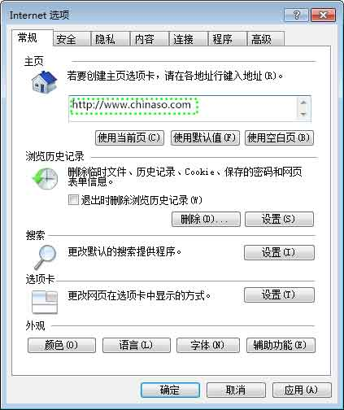

-
在菜单栏点击"工具"，然后选择"选项" ，弹出选项对话框。
-
在主页后的框中输入 www.chinaso.com�，然后点击确定按钮即可设为主页。
Chrome浏览器
-
点击浏览器右上角的设置图标，然后选择"设置"，弹出设置对话框。
-
在设置中，选择"打开特定网页或一组网页"，然后点击"设置网页"，在打开的对话框中里输入 www.chinaso.com�，输入后点击确定按钮，浏览器会自动保存。
Safari浏览器
搜狗浏览器
Opera浏览器


360极速浏览器
-
点击浏览器右上角的设置图标-选项，弹出选项对话框。
-
在基本设置中，选择"打开此页"并在后面框里输入 www.chinaso.com�，输入后关闭即可，浏览器会自动保存。
IE浏览器
-
在浏览器界面上点击"工具"选项，选择"Internet 选项"
-
打开之后在下图标识的地方，键入中国搜索的地址www.chinaso.com�，然后点击确认，这样便将中国搜索设置为您的默认主页了。
